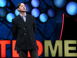
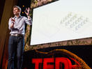
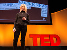
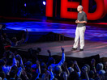

-
Denise Herzing: Could we speak the language of dolphins?
14:38 Posted: Jun 2013
Views: 46,038 | Comments: 29
-
Anas Aremeyaw Anas: How I named, shamed and jailed
12:46 Posted: Jun 2013
Views: 79,221 | Comments: 60
-
Alex Laskey: How behavioral science can lower your energy bill
08:11 Posted: Jun 2013
Views: 128,082 | Comments: 64
-
 Play
Andrew Solomon: Love, no matter what
23:27 Posted: Jun 2013
Views: 204,719 | Comments: 98
-
Lisa Bu: How books can open your mind
06:16 Posted: May 2013
Views: 493,975 | Comments: 225
-
Hendrik Poinar: Bring back the woolly mammoth!
10:22 Posted: May 2013
Views: 134,506 | Comments: 116
-
Jackson Katz: Violence against women—it's a men's issue
17:40 Posted: May 2013
Views: 231,473 | Comments: 335
-
Paola Antonelli: Why I brought Pac-Man to MoMA
18:42 Posted: May 2013
Views: 147,024 | Comments: 68
-
Ji-Hae Park: The violin, and my dark night of the soul
12:41 Posted: May 2013
Views: 265,503 | Comments: 167
-
 Play
Alastair Parvin: Architecture for the people by the people
13:11 Posted: May 2013
Views: 269,871 | Comments: 123
-
 Play
Judy MacDonald Johnston: Prepare for a good end of life
06:03 Posted: May 2013
Views: 345,163 | Comments: 196
-
Phil Hansen: Embrace the shake
10:01 Posted: May 2013
Views: 296,484 | Comments: 101
-
 Play
Peter Singer: The why and how of effective altruism
17:19 Posted: May 2013
Views: 291,621 | Comments: 343
-
Sergey Brin: Why Google Glass?
07:15 Posted: May 2013
Views: 442,890 | Comments: 265
-
Jay Silver: Hack a banana, make a keyboard!
13:15 Posted: May 2013
Views: 343,369 | Comments: 98
-
Liu Bolin: The invisible man
07:46 Posted: May 2013
Views: 290,768 | Comments: 83
-
Maria Bezaitis: The surprising need for strangeness
08:00 Posted: May 2013
Views: 272,923 | Comments: 107
-
Meg Jay: Why 30 is not the new 20
14:49 Posted: May 2013
Views: 1,741,790 | Comments: 484
-
Ken Robinson: How to escape education's death valley
19:11 Posted: May 2013
Views: 1,194,325 | Comments: 423
-
Angela Lee Duckworth: The key to success? Grit
06:12 Posted: May 2013
Views: 803,553 | Comments: 246